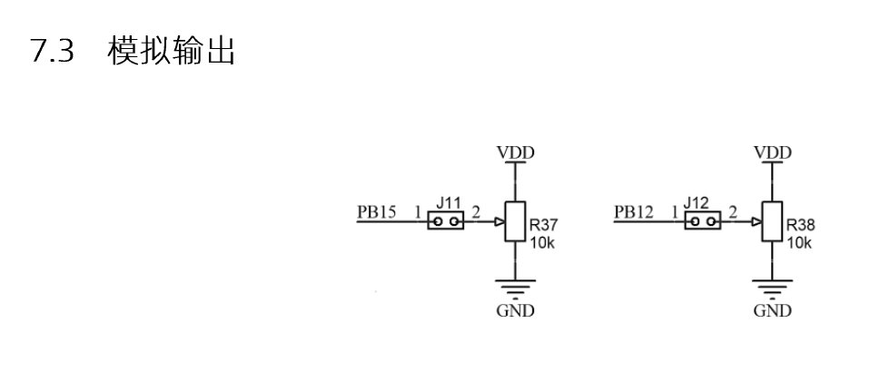
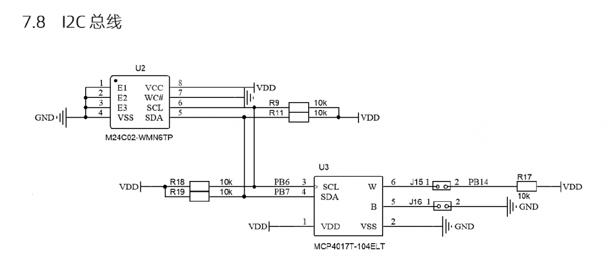
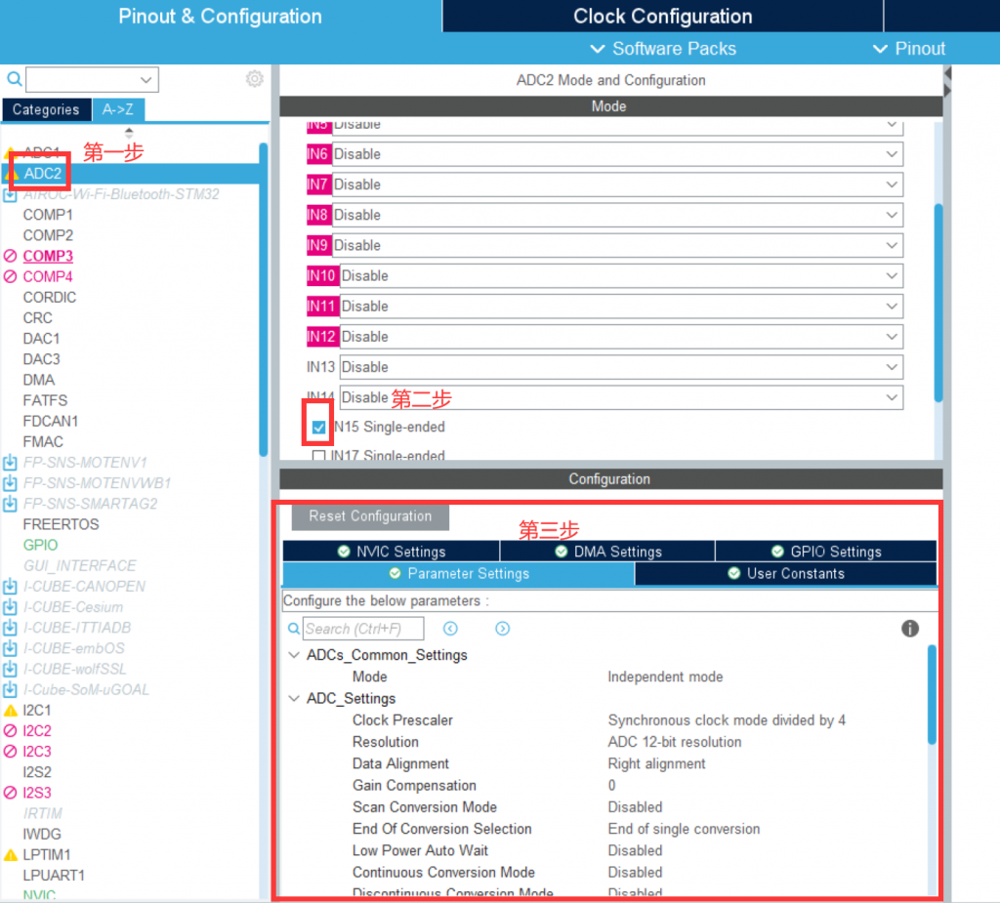
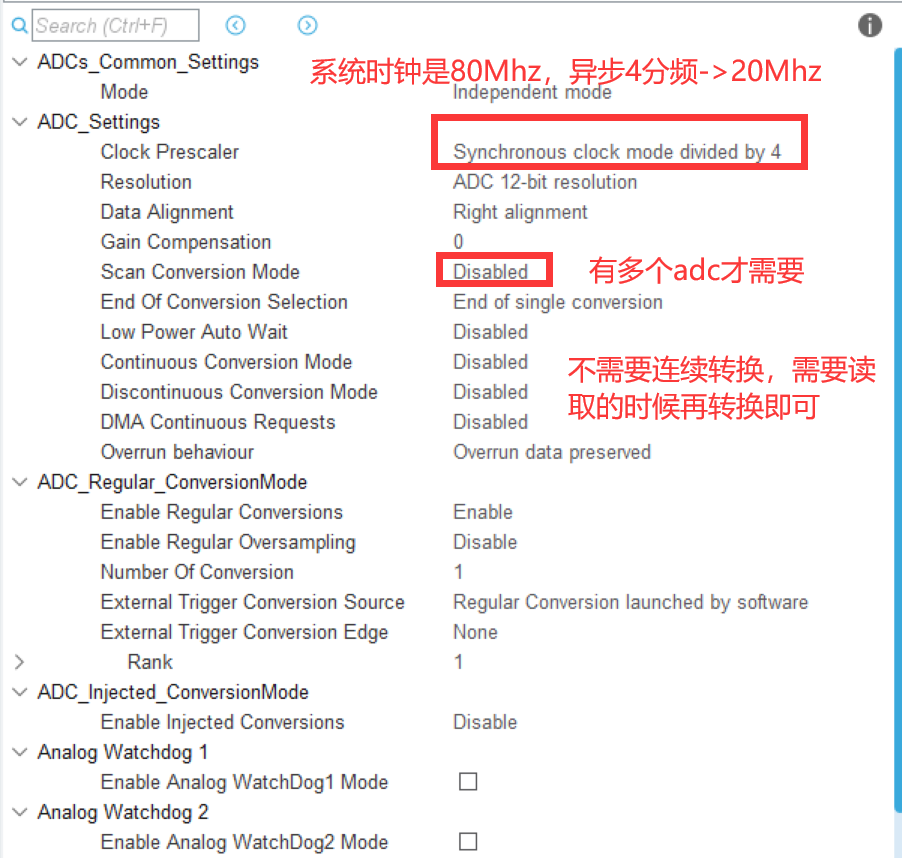
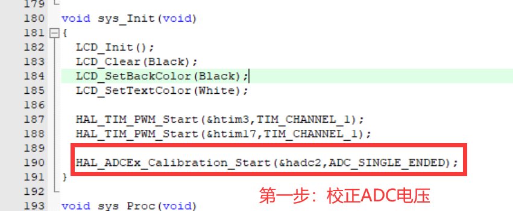
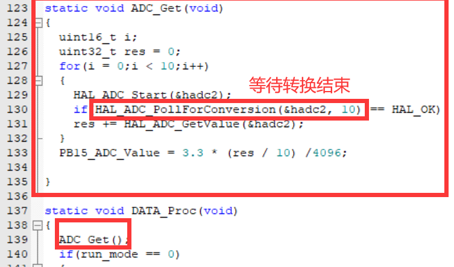

本模块取自G4开发板，f1开发板的配置类似。
G4开发板的ADC主要有以下3个应用，配置都类似。


由电路图可知,训练板上有三路模拟信号输入:
- 管脚 PB15 接电位器 R37 分压后的电压信号。
- 管脚 PB12 接电位器 R38 分压后的电压信号。
- 管脚 PB14 接可编程电阻(数字电位器)MCP4017 的 W 端。
其中:
PB12 为 ADC1 的输入通道 IN11,
PB14 为 ADC1 的 IN5;
PB15 为 ADC2 的 IN15。
赛题举例
比如11th省赛赛题中的：
使用 STM32 微控制器 ADC 通道(PB15)测量竞赛板电位器 R37 输出的模拟电
压信号 VR37。
第一步 使用stmcubemx配置

详细配置：



常用 ADC 函数
- 初始化 ADC:MX\_ADC1\_Init 里调用 HAL\_ADC\_Init 函数完成各参数配置。
- 完成 ADC 校准:G 系列芯片的 ADC 需要用户添加 ADC 校准代码。
库 函 数 原 型 : HAL\_StatusTypeDef HAL\_ADCEx\_Calibration\_Start(ADC\_HandleTypeDef \*hadc,
uint32\_t SingleDiff)
参数 1:ADC 句柄,如:&hadc1。
参数 2:ADC\_SINGLE\_ENDED(单端输入)或者 ADC\_DIFFERENTIAL\_ENDED(差分输入)
返回值:HAL\_OK 等状态。
- 启动 ADC 转换:HAL\_StatusTypeDef HAL\_ADC\_Start(ADC\_HandleTypeDef \*hadc)
- 等待 ADC 转换: HAL\_StatusTypeDef HAL\_ADC\_PollForConversion(ADC\_HandleTypeDef \*hadc,
uint32\_t Timeout)
参数 Timeout:超时(ms)
- 获取 ADC 转换值:uint32\_t HAL\_ADC\_GetValue(ADC\_HandleTypeDef \*hadc)
返回值:ADC 转换值